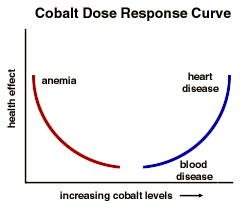

Kidneys and Metals Problem Set
Problem 2: Metals in the body
For help to answer the question:
Which of the following is NOT a normal function/role of metal in the body?
A. iron in the heme of hemoglobin B. calcium in bones C. cobalt in Vitamin B12 D. phosphorus in ATP E. arsenic in ATP
Tutorial
| You may have heard that metals are toxic and indeed many are toxic at the right dose. But there are also many metals which are essential to human life in the correct dose. Some examples of metals that we cannot live without are sodium (Na), potassium (K), magnesium (Mg), calcium (Ca), iron (Fe), nickel (Ni), cobalt (Co), copper (Cu), zinc (Zn), molybdenum (Mo), manganese (Mn), and tin (Sn). |
Metal: Function: cobalt (Co) core of vitamin B12 (required to make blood cells) copper (Cu) part of redox enzymes used in defense against oxidative damage, for example superoxide dismutase (SOD) sodium (Na) important for extra cellular cations (positively charged ions or molecules) and nerve function calcium (Ca) part of bones; important for blood clotting potassium (K) major cation in intracellular fluids; essential for nerve and heart function zinc (Zn) part of dozens of enzymes; plays a role in reproduction and sexual maturation molybdenum (Mo) found nitrogen fixation and reduction enzymes iron (Fe) found in hemoglobin and other enzymes
As you can see, metals are essential to many functions in the body. They can also be toxic. For example, arsenic (As) can be incorporated in to ATP, so it interferes with the cells ability to produce and use energy.  It all depends on the dose. For example, cobalt is an essential metal for humans. People who don't get enough cobalt in their diet have trouble making enough red blood cells. Cobalt is a component of vitamin B12 which helps in the process of making red blood cells. Without enough red blood cells, anemia develops. People with anemia experience symptoms of tiredness, weakness and listlessness.
Too much cobalt is also dangerous. When someone is exposed to too much cobalt, they may develop blood diseases and heart problems. Some people exposed to cobalt occupationally have developed lung disease and it may be linked to lung cancer.


The Southwest Environmental Health Sciences Center
The Biology Project
The University of Arizona
Monday, February 22, 1999
Contact the Development Teamhttp://biology.arizona.edu
All contents copyright © 1999. All rights reserved.